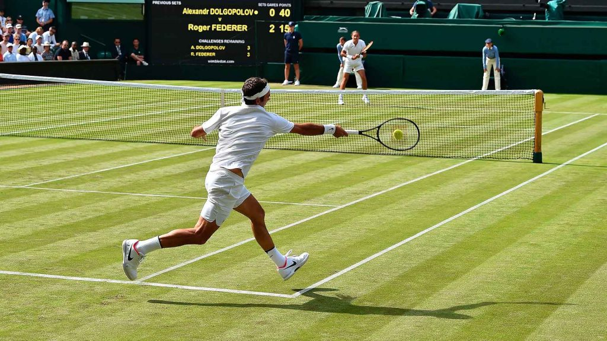
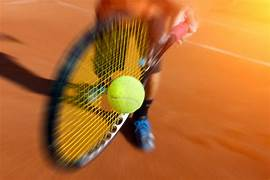

Tennis ist eine Ballsportart und zählt wie Volleyball und Tischtennis zur Gruppe der Rückschlagspiele. Ziel ist es, den Ball mit einem Speziellen Schläger im Wechsel über ein Netz in die Spielfeldhälfte des Gegners zu schlagen.
Grundsätzlich spielt man Tennis im Einzel oder Doppel. Das bedeutet, je ein oder zwei Spieler treten im Match gegeneinander an.
Beim Gemischten Doppel (Mixed) sind je ein männlicher Spieler und eine weibliche Spielerin in einem Team.
Tennis wird meist im Freien gespielt, es gibt aber auch Tennishallen. Man unterscheidet verschiedene Spielfeldoberflächen. Am bekanntesten sind der Rasenplatz, der Sandplatz und der Hartplatz aus
Beton und einer speziellen Kunststoffoberfläche.
Tennis trainiert die Ausdauer, die Koordination und die Muskelkraft. Die Kombination aus Schnellkraft und Kraftausdauer macht das Lauf- und Rückschlagspiel zum perfekten Ganzkörpertraining.
 Das kontinuirliche Sprinten über die eigene Spielfeldhälfte, um den Ball zu treffen, trainiert in hohem Maße die Kondition. Zudem wird insbesondere die Muskulatur im Schlagarm, in den Schultern im Core sowie in den Beinen gestärkt.
Ein ergänzendes Oberkörpertraining kann sinnvoll sein, um eine einseitige Beanspruchung zu vermeiden.
Zudem ist Tennis eine ideale Sportart, um die Koordination, das Gleichgewicht, die Reaktionsfähigkeit und die Konzentration zu schulen. Nicht zu vergessen sind der hohe Spaßfaktor und die soziale Komponente beim Tennis.
Der Sport ist zwar primär ein Solosport, doch du spielst nie allein, sondern immer mit bzw. gegen einen Partner.
Der sogenannte Tennis-Arm oder Tennis-Ellbogen und das Schulter-Impingement zählen zu typischen Verletzungen unter Profispielern. Die ruckartigen, schnellen Bewegungen und abrupten Stopps können zudem die Gelenke und Bänder belasten.
Spezielles Schuhwerk ist für Tennisspieler essentiell, um ein Umknicken zu verhindern.
Tennis ist nicht ohne Grund so populär: Du kannst den Sport in jedem Alter betreiben und damit deine Kraft und Ausdauer langfristig fördern. Wichtigste Voraussetzung ist die Freude am Ball- und Mannschaftssport. Zudem solltest du keine akuten Schulter-, Rücken- oder Kniebeschwerden haben.
Auch bei Herz-Kreislauf-Problemen oder starkem Bluthochdruck ist Vorsicht geboten. Hole dir in beiden Fällen besser erst grünes Licht vom Arzt.
Ansonsten ist Tennis eine hervorragende Sprortart, bei der du viel an der frischen Luft sein und dich innerhalb einer Community fit halten kannst.